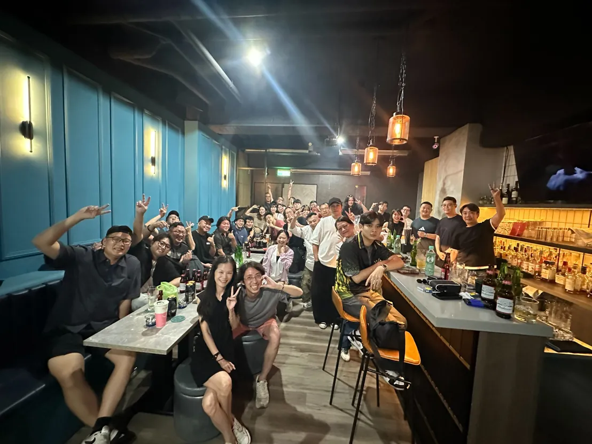

載入照片中...

數據加載中，請稍候...
數據加載中，請稍候...
團隊總分排行👑
| 排名 | 隊名 | 總分 |
|---|---|---|
| 1 | 軟飯揪團中 | 45 |
| 2 | Tonight29發財隊 | 32 |
| 3 | 匪類里民一直喝 | 25 |
| 4 | 傑克紅心 | 15 |
| 5 | 酒空組 | 15 |
| 6 | 人生揪難亮 | 11 |
| 1 | 逃生Zoo口 | 25 |
| 2 | 哈哈隊 | 22 |
| 3 | 嘻嘻隊 | 22 |
| 4 | 有點傻 | 14 |
| 5 | Tonight29恭喜隊 | 14 |
| 排名 | 隊名 | 總分 |
|---|---|---|
| 1 | 逃生Zoo口 | - |
| 2 | 有點傻 | - |
| 3 | 嘻嘻隊 | - |
| 4 | 哈哈隊 | - |
| 5 | 傑克黑桃 | - |
| 6 | Tonight29恭喜隊 | - |
個人勝場排行👑
| 組別 | 隊名 | 姓名 | 勝場數 |
|---|---|---|---|
| Tonight29發財隊 | 猴猴 | 10 | |
| 軟飯揪團中 | 瓜瓜 | 6 | |
| 嘻嘻隊 | 阿倫 | 6 | |
| 嘻嘻隊 | 淦 | 5 | |
| 哈哈隊 | 華華 | 5 |
Top Lady 🌹
| 隊名 | 姓名 | 勝場數 |
|---|---|---|
| Tonight29發財隊 | +0 | 5 |
| Tonight29發財隊 | Keira | 5 |
| Tonight29恭喜隊 | 薇薇 | 3 |
| Tonight29發財隊 | 貓咪 | 2 |
| Tonight29恭喜隊 | 29小安 | 2 |
地獄倒霉鬼💀
| 隊名 | 姓名 | 先攻機率 |
|---|---|---|
| Tonight29發財隊 | Keira | 40.00% |
| Tonight29發財隊 | +0 | 41.67% |
| Tonight29發財隊 | 猴猴 | 66.67% |
賽事新聞
2026/7/15
🏆 第六屆戰報彙整 (G01 ~ 季後賽全集)
⏳ 點擊載入第六屆完整賽事戰報...
2026/1/20
🏆 第五屆戰報彙整 (G01 ~ 季後賽全集)
⏳ 點擊載入第五屆完整賽事戰報...